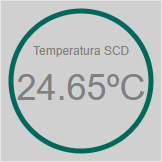
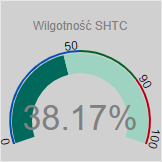
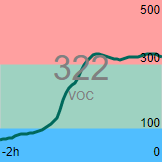

Komfortometr
Urządzenie jest domową stacją badającą parametry jakościowe powietrza i światła oraz monitorującą zdarzenia
dźwiękowe wpływające na samopoczucie użytkowników.
Pierwsze uruchomienie
Po włączeniu do sieci urządzenie uruchomi sie automatycznie i po kilku sekundach dioda z ikoną sieci WiFi
zaświeci sie kolorem zielonym. Oznacza to, że urzadzenie pracuje w trybie "access point".
Podłącz się telefonem lub innym urządzeniem z WiFi do sieci o nazwie "Komfortometr".
Następnie otwórz stronę pod adresem http:\\192.168.4.1/network.
Wybierz z listy nazwę Twojej sieci WiFi oraz wpisz hasło.
Naciśnij "OK", a nastepnie wybierz opcję "Zapisz".
Wybierz opcję "Uruchom ponoqnie".
Dashboard
Informacje z czujników urzadzenia wyświetlane są w tzw. widżetach. Na stronie może znajdować się do dwudziestu
aktywnych widżetów. Jest kilka typów widżetów:
- Prosty,
- Profesjonalny,
- Liniowy (z trzema gradacjami czasu),
- Słupkowy (z trzema gradacjami czasu),
Widżet Prosty

Widżet prezentuje nazwę oraz aktualną wartość pomiaru czujnika.
Widżet Profesjonalny

tu będzie opis
Widżet liniowy

tu będzie opis
Widżet słupkowy
tu będzie opis
Ustawienia
tu będzie opis
Ekran
tu będzie opis
Diody
tu będzie opis
Powiadomienia
tu będzie opis
Połączenie
tu będzie opis
Aktualizacja
tu będzie opis